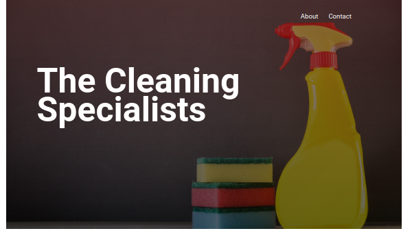

Background
Hi there! My name is Russell and I'm a junior front-end developer from Melbourne.
I've been playing around with HTML, CSS, & a little bit of JavaScript since 2017. However, over the past year I've taken a deeper dive into a number of technologies and languages, so that I can work in a more professional capacity. (see below)
Technical Skills:
Rated from 1 (least proficient) to 4 (most proficient)
- JavaScript ✅✅✅
- HTML ✅✅✅✅
- CSS ✅✅✅
- SaSS ✅
- Figma (designing UI) ✅✅
- React ✅✅
- Git & Github ✅✅
- SQL Database Design & PostgreSQL ✅
- Node JS & Express ✅
I started off with platforms like Codecademy and FreeCodeCamp and used that as a springboard to learning via building projects, documentation, blog posts, tutorials & a healthy dose of StackOverflow 😃. I'm continually amazed by the sheer number of people who sacrifice their time and energy in order to share their knowledge with others & I hope I can pay it forward by contributing my own expertise, once I gain the necessary experience to do so.
I feel quite fortunate that I'm living in a time where I'm able to work as a developer. Web development allows me to indulge in continuous learning and hone a skill that is both creative and used to solve real, technical problems for others. I've primarily focused on learning vanilla JS, HTML, & CSS, in the hopes that I can gain a solid first-principles understanding. Frameworks and libraries are incredibly useful and efficient, however, they tend to abstract away some of the underlying complexity. As the web development space is one of constant change, I hope that the such an understanding can help me to better adapt to whatever the hot new framework of a given time is, and, in the long-term, make me a more dilligent developer.
Thanks for taking the time to view my page and feel free to check out some of my projects, or contact me, down below.
Portfolio
Cleaning Business Landing Page
-
Technologies used:
- Vanilla HTML, CSS, & JS
- Responsive design (Flexbox & Grid)
- Google Maps embed API
I created this site to serve as a generic landing page for a cleaning business. By keeping the UI minimal and clutter-free customers can quickly get an idea of who the business is, how they can be contacted, as well as where they're located (via a Google Maps embed).
I also made sure to make the site responsive so that it can be viewed on a wide variety of devices and screen sizes.
Edison Tribute Page
-
Technologies used:
- Vanilla HTML, CSS, & JS
- Google Fonts
- Responsive Design (Grid & Flexbox)
This project was a modified version of the FreeCodeCamp project for a Norman Barlaug tribute page, which can be found here.
By modifying the subject of the tribute page, I was prevented from just passively copying and pasting the content from the FreeCodeCamp sample project. Instead, I had a number of additional considerations, like what resolution the Edison cover photo could be (while maintaining responsiveness) as well as any possible modifications to layout, given that the content would differ from the sample project.
React Weather App
-
Technologies used:
- React
- Open Weather API
- AJAX calls via Asynchronous JS
This project's UI was initially designed in Figma. I then used create-react-app & fetched data from the OpenWeatherMap's REST API, via an API key.
By implementing the application in React I was able to use functional components and React Hooks for passing props and fetching the weather data & icons.
Random Quote Machine
-
Technologies used:
- Vanilla HTML, CSS, & JS
- DOM Manipulation via JS
- Fetching Quote data via Asynchronous JS
For this project I fetched a JSON file of various quotes, which can be found here
I then parsed that JSON, randomised the selection via the Math object, and manipulated the DOM to display the appropriate quote